2026-04-24

*, / Multiply and Divide+, - Add and Subtract** Exponentiate%, // Modulus and Floor Division[]{}(){}frozenset()Lists are 0-indexed. We can access the elements of a list with square braces and the index.
We can access the paired values by dictionary[key]
Tuples are 0-indexed. We can access (but not modify!) the elements of a tuple with square braces and the index.
The least used (and often overlooked!) built-in. Useful operations include the union (|) and intersection (&).
Create a Python function with the following boilerplate
See https://numpydoc.readthedocs.io/en/latest/format.html#docstring-standard
if, elif, elsewhile, forThe difference is 10Control the flow of code based on Boolean (True/False) values/expressions.
The numbers are not the same!Repeat based on conditionals or iterables
Difference is 3
Difference is 2
Difference is 1
The value of z is 0
The value of z is 1
The value of t is 5
The value of t is 10
The value of t is 15So far, we’ve been working in the Python Interactive Shell. We can also bundle up our commands and run them from a .py script. The shebang #!/usr/bin/env python lets our computer know how to run the script if we don’t invoke it with python my_script.
Visit the link below to get an online instance of a Jupyter Notebook with some demos.